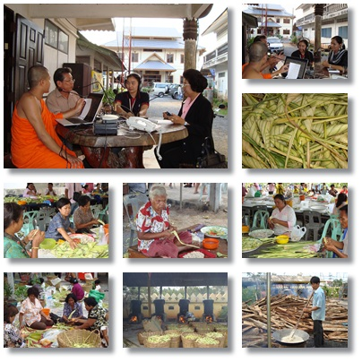

|
|
||
|
 � สดจากพื้นที่ ประเพณี "ห่อต้ม" วันออกพรรษา
ประเพณีห่อต้มหรือห่อปัดเกิดจากความกันดารของนครสังกัสสะซึ่งเป็นนครเล็ก และประชาชนที่ไปประชุมรอรับเสด็จพระพุทธองค์อยู่ก็เป็นคนยากจนเป็นส่วนใหญ่ จึงไม่สามารถที่จะหาภัตตาหารอย่างอื่นเตรียมถวายพระพุทธองค์ได้ คงหาได้แต่อาหารจำพวกเสบียงกรังชนิดหนึ่งที่เรียกกันว่า ต้ม หรือ ปัด เท่านั้น ในวันลากพระจึงนิยมนำต้มไปทำบุญที่วัดสืบต่อกันมาจนทุกวันนี้ ประเพณีชักพระเป็นประเพณีที่พราหมณ์ศาสนิกชนและพุทธศาสนิกชนปฏิบัติสืบต่อกันมา สันนิษฐานว่าประเพณีนี้เกิดขึ้นครั้งแรกในประเทศอินเดีย ที่นิยมเอาเทวรูปออกแห่ในโอกาสต่าง ๆ ต่อมาพุทธศาสนิกชนได้นำเอาคติความเชื่อดังกล่าวมาปรับปรุงให้สอดคล้องกับความเชื่อทางพุทธศาสนา ประเพณีชักพระเล่ากันเป็นเชิงพุทธตำนาน ว่า หลังจากพระพุทธองค์ทรงกระทำยมกปาฏิหารย์ปราบเดียรถีย์ ณ ป่ามะม่วง กรุงสาวัตถี แล้วได้เสร็จไปจำพรรษา ณ ดาวดึงส์เพื่อโปรดพุทธมารดาซึ่งขณะนั้นทรงจุติเป็นมหามายาเทพ สถิตอยู่ ณ ดุสิตเทพพิภพตลอดพรรษา พระพุทธองค์ทรงประกาศพระคุณของมารดาแก่เทวสมาคมและแสดงพระอภิธรรมโปรดพุทธมารดา 7 คัมภีร์ จนพระมหามายาเทพและเทพยดา ในเทวสมาคมบรรลุโสดาบันหมด ถึงวันขึ้น 15 ค่ำ เดือน 11 อันเป็นวันสุดท้ายของพรรษา พระพุทธองค์ได้เสด็จกลับมนุษยโลกทางบันได ทิพย์ที่พระอินทร์นิมิตถวาย บันไดนี้ทอดจากภูเขาสิเนนุราชที่ตั้งสวรรค์ ชั้นดุสิตมายังประตูนครสังกัสสะ ประกอบด้วยบันไดทอง บันไดเงินและบันไดแก้ว บันไดทองนั้นสำหรับเทพยดา มาส่งเสด็จอยู่เบื้องขวาของพระพุทธองค์บันไดเงินสำหรับพรหมมาส่งเสด็จอยู่เบื้องซ้ายของพระพุทธองค์ และบันไดแก้วสำหรับพระพุทธองค์อยู่ตรงกลาง เมื่อพระพุทธองค์เสด็จมาถึง ประตูนครสังกัสสะตอนเช้าตรู่ของวันแรม 1 ค่ำ เดือน 11 ซึ่งเป็นวันออกพรรษานั้น พุทธศาสนิกชนที่ทราบกำหนดการเสด็จกลับของพระพุทธองค์จากพระโมคคัลลานได้มารอรับเสด็จ อย่างเนืองแน่นพร้อมกับเตรียมภัตตาหารไปถวายด้วย แต่เนื่องจากพุทธศาสนิกชนที่มารอรับเสด็จมีเป็นจำนวนมากจึงไม่สามารถจะเข้าไปถวายภัตตาหารถึงพระพุทธองค์ได้ทั่วทุกคน จึงจำเป็นที่ต้องเอาภัตตาหารห่อใบไม้ส่งต่อ ๆ กันเข้าไปถวายส่วนคนที่อยู่ไกลออกไปมาก ๆ จะส่งต่อ ๆ กันก็ไม่ทันใจ จึงใช้วิธีห่อภัตตาหารด้วยใบไม้โยนไปบ้าง ปาบ้าง ข้าไปถวายเป็น ที่โกลาหล โดยถือว่าเป็นการถวายที่ตั้งใจด้วยความบริสุทธิ์ด้วยแรงอธิษฐานและอภินิหารแห่งพระพุทธองค์ ภัตตาหารเหล่านั้นไปตกในบาตรของพระพุทธองค์ทั้งสิ้น นอกจากจะมีการทำบุญตักบาตรกันที่วัดแล้ว พิธีสำคัญอีกอย่างหนึ่ง คือ การสรงน้ำพระที่จะชักลากในวันรุ่งขึ้น ถึงยามกลางคืนก็จะมีงานเฉลิมฉลองด้วยมหรสพมากมาย และมีการเทศนาธรรมตอนพระพุทธองค์เสด็จกลับจากดาวดึงส์ ในวันรุ่งขึ้น คือวันแรม 1 ค่ำ เดือน 11 มีการ "ตักบาตรหน้าล้อ" ตามที่ชาวบ้านเมืองนครเรียกขาน ในวันนี้ชาวบ้านจะนำอาหารใส่ลงบาตรที่เรียงกันไว้บนเรือพระบริเวณด้านหน้าพระลาก การตักบาตรหน้าล้อนี้นิยมตักบาตรด้วย "ห่อต้ม" ซึ่งเป็นข้าวเหนียวผัดกับกะทิ ห่อเป็นรูปสามเหลี่ยมด้วยใบพ้อ (ใบกระพ้อ) ที่สอดมัดกันเองโดยไม่ต้องใช้ตอกหรือเชือก และ "ห่อมัด" ซึ่งคล้ายกับห่อต้ม ต่างกันก็แต่ห่อด้วยใบจากหรือมะพร้าวอ่อนเป็นรูปสี่เหลี่ยมผืนผ้ายาวประมาณ 4-5 นิ้ว แล้วใช้เชือกมัดเป็นเปลาะ ๆ ก่อนนำไปต้ม เมื่อตักบาตรเรียบร้อยแล้ว ก็จะอัญเชิญพระพุทธรูปปางอุ้มบาตรขึ้นประดิษฐานบนบุษบกแล้วแห่ไปตามถนนหนทางในกรณีลากพระทางน้ำก็จะอัญเชิญขึ้นประดิษฐานในเรือพระ ด้านหลังของพระพุทธรูปที่ใช้แห่ เป็นธรรมมาสน์ที่พระภิกษุนั่ง ในบริเวณใกล้ ๆ กันก็เป็นที่นั่งของศิลปินพื้นบ้านและใช้สำหรับวางเครื่องดนตรี อันมีทับตะโพน กลองเพลใบใหญ่ 1-2 ใบ หรืออาจจะมีอย่างอื่นอีกก็ได้ เหตุนี้จึงเกิด ประเพณี "ห่อต้ม" "ห่อปัด" ขึ้น เพื่อเป็นการแสดงถึงความปิติยินดีที่พระพุทธองค์เสด็จกลับจากดาวดึงส์ พุทธศาสนิกชน ได้อัญเชิญพระพุทธองค์ขึ้นประทับบนบุษบกที่เตรียมไว้ แล้วแห่แหนกันไปยังที่ประทับของพระพุทธองค์ ครั้นเลยพุทธกาลมาแล้วและเมื่อมีพระพุทธรูปขึ้น พุทธศาสนิกชนจึงนำเอาพระพุทธรูปยกแห่แหนสมมติแทนพระพุทธองค์ ชาวสุราษฎร์ธานี จากทุกอำเภอเดินทางมาร่วม
ประเพณี "ห่อต้ม" ณ วัดท่าไทร อ.กาญจนดิษฐ์ จ.สุราษฎร์ธานีกันอย่างคับคั่ง
นับเป็นอีกหนึ่งความสมัครสมานสามัคคีในงานบุญเดือน ๑๑ ประจำปีนี้ ผู้มารายงานสด.-สถานีวิทยุร่วมด้วยช่วยกัน
(inn) สุราษฎร์ธานี FM 105.50 MHz. |
||